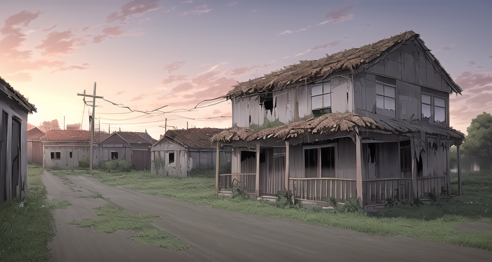

蔚爾村莊
歷史紀載上存在最悠久的村莊，蘊含許多美麗的文化，同時也隱藏一些令人聞風喪膽的怪談......

從原古時期坐落於此的村莊，至今已經過了幾千年了，村莊的建築保持著古老的模樣，他們雖然 存在許久，但是他們的建築卻不像幾千年前的樣子。他們的生活方式就像是一個聚落，大家彼此 和樂融融。這裡的人似乎非常具有智慧，就像是他們裝載著從古至今的所有知識，曾經有人問他們 為什麼好像什麼都知道，是去哪裡學習的嗎？他們給出的回答是「就是知道」，這個村莊的人幾乎 一切都是憑直覺，因此他們沒有什麼學校也沒有什麼教育機構，這個雖然開放但充滿神秘色彩的 村莊，讓人十分好奇。
在這裡也有過一些令人聞風喪膽的事，就是在這裡有所謂的黑巫師，憑藉著黑巫術控制著人們，他們 會讓人有虛假的記憶，讓人看見不存在的幻覺，甚至能夠讓人們起爭執，如此一般的力量在這個村莊事不被允許的 ，他們厭惡仇恨，在這裡的村民只要頻率不對就會減少見面的次數，完全沒有仇恨，可黑巫術的力量不僅僅於此， 黑巫術甚至能夠讓人變的憤怒、暴力，當存民們被問道對於黑巫術有什麼看法，他們的回答是「巫術能夠創造美好 黑巫師拿來做壞事很明顯是人格扭曲」，他們還特別提到村民們是怎麼處理黑巫師的，「沒什麼好處理的，就只是 同樣用巫術封印黑巫師的力量」，那他們是怎麼學會巫術的呢？他們的回答是「就是知道」。
你們對於這樣一座充滿神秘色彩的村莊有什麼看法呢？總感覺跟現代人們格格不入啊！尤其是仇恨的部分。